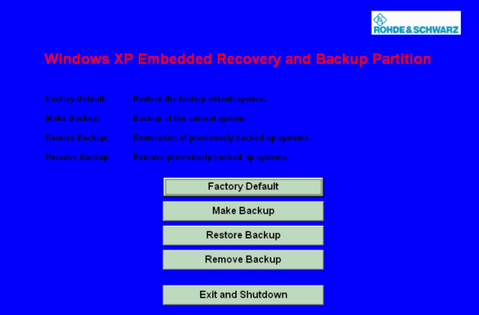

Accessing the Recovery and Backup Dialog
From the "Recovery and Backup" dialog, you can initiate all actions related to backups.
To access the dialog:
Connect an external keyboard.
Switch on the R&S CMW.
While the boot menu is displayed, select "Backup/Recovery" using the cursor keys.
Press "Enter" to open the dialog.

Recovery and backup dialog